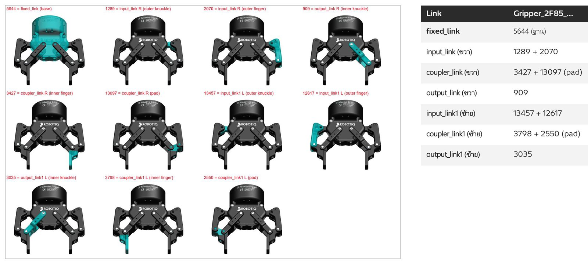
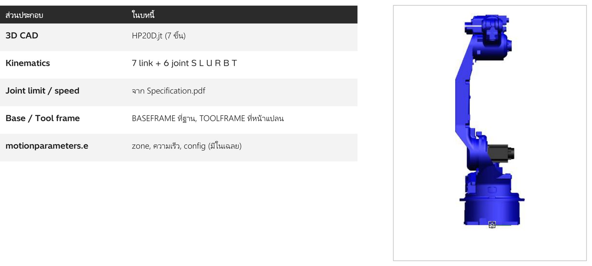
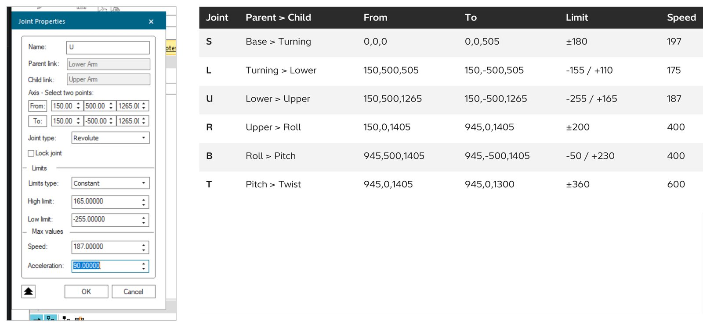

00. CAD Import
วัตถุประสงค์การเรียนรู้
- สร้างโฟลเดอร์
My_Project\Libraryตั้ง System Root และเปิด New Study - แปลงไฟล์ CAD (.jt) เป็นชิ้นส่วน .cojt แยกชิ้นด้วย New Part แล้วบันทึกด้วย End Modeling
- สร้าง Gripper: Frame (TCPF / BASEFRAME), Tool Definition และกลไก Crank (RRRR) พร้อม Pose OPEN / CLOSE
- สร้าง Device (XZ_Gantry, PS_CNC) และหุ่นยนต์ HP20D (7 link, 6 joint) แล้วติด Gripper ด้วย Mount Tool
นำไฟล์ CAD (JT) เข้า Process Simulate ทีละขั้น รวม 22 ขั้น — แปลงเป็นชิ้นส่วน .cojt แยกชิ้น สร้างเครื่องมือจับ (Gripper) อุปกรณ์ (Device) และหุ่นยนต์ HP20D พร้อม Kinematics ชิ้นส่วนที่ได้ถูกนำไปใช้ต่อในบท 01–04
ภาพรวม: จากไฟล์ CAD สู่ชิ้นส่วนที่ใช้ใน simulation ได้
| ลำดับ | หัวข้อ | ทำอะไร |
|---|---|---|
| 01 | New Study | โฟลเดอร์ My_Project + System Root |
| 02 | Convert CAD | JT > .cojt ใน Library |
| 03 | Part | แยกชิ้น + Compound Part |
| 04 | Vacuum Gripper | Frame + Tool Definition |
| 05 | Gripper 2F85 | Crank RRRR + Pose + Tool Definition |
| 06 | Device | XZ_Gantry และ PS_CNC |
| 07 | Robot HP20D | 7 link, 6 joint + limit |
| 08 | Robot Frame | BASEFRAME, TOOLFRAME, Mount Tool |
| 09 | Geometry + Save | Create Box + Save .psz |
สิ่งที่ต้องมี: Process Simulate 2502 · โฟลเดอร์
00_CAD_IMPORT · ไฟล์ JT 6 ไฟล์ + Robot\HP20D.jt · Robot\Specification.pdf · Robot\HP0020D_A00.cojt (เฉลย)
Workflow: 6 ช่วง
| ช่วง | งาน | ทำอะไร | ได้ |
|---|---|---|---|
| 01 | Study | สร้างโฟลเดอร์ ตั้ง System Root และ New Study | My_Project |
| 02 | Part | Convert Part_Assembly, PLC แล้วแยกชิ้น | Part |
| 03 | Tool | Vacuum + 2F85 (Crank RRRR) | Gripper |
| 04 | Device | XZ_Gantry และ PS_CNC (.cojt ทำเอง) | Device |
| 05 | Robot | HP20D: link, joint, limit, frame | Robot |
| 06 | Save | Create Geometry แล้วบันทึก .psz | CAD_IMPORT.psz |
นำไฟล์ CAD (JT) เข้า Process Simulate ทีละขั้น รวม 22 ขั้น — แปลงเป็นชิ้นส่วน .cojt แยกชิ้น สร้างเครื่องมือจับ (Gripper) อุปกรณ์ (Device) และหุ่นยนต์ HP20D พร้อม Kinematics ชิ้นส่วนที่ได้ถูกนำไปใช้ต่อในบท 01–04
ภาพรวม: จากไฟล์ CAD สู่ชิ้นส่วนที่ใช้ใน simulation ได้
| ลำดับ | หัวข้อ | ทำอะไร |
|---|---|---|
| 01 | New Study | โฟลเดอร์ My_Project + System Root |
| 02 | Convert CAD | JT > .cojt ใน Library |
| 03 | Part | แยกชิ้น + Compound Part |
| 04 | Vacuum Gripper | Frame + Tool Definition |
| 05 | Gripper 2F85 | Crank RRRR + Pose + Tool Definition |
| 06 | Device | XZ_Gantry และ PS_CNC |
| 07 | Robot HP20D | 7 link, 6 joint + limit |
| 08 | Robot Frame | BASEFRAME, TOOLFRAME, Mount Tool |
| 09 | Geometry + Save | Create Box + Save .psz |
สิ่งที่ต้องมี: Process Simulate · โฟลเดอร์
00_CAD_IMPORT · ไฟล์ JT 6 ไฟล์ + Robot\HP20D.jt · Robot\Specification.pdf · Robot\HP0020D_A00.cojt (เฉลย)
Workflow: 6 ช่วง
| ช่วง | งาน | ทำอะไร | ได้ |
|---|---|---|---|
| 01 | Study | สร้างโฟลเดอร์ ตั้ง System Root และ New Study | My_Project |
| 02 | Part | Convert Part_Assembly, PLC แล้วแยกชิ้น | Part |
| 03 | Tool | Vacuum + 2F85 (Crank RRRR) | Gripper |
| 04 | Device | XZ_Gantry และ PS_CNC (.cojt ทำเอง) | Device |
| 05 | Robot | HP20D: link, joint, limit, frame | Robot |
| 06 | Save | Create Geometry แล้วบันทึก .psz | CAD_IMPORT.psz |
ขั้นที่ 1: สร้างโฟลเดอร์ My_Project\Library และตั้ง System Root
- 1หน้า Welcome ช่อง System Root = ...\00_CAD_IMPORT\My_Project\Library
- 2คลิก New Study (RobcadStudy) แล้ว Create
ข้อควรจำ: System Root ใช้ร่วมทั้งเครื่อง ก่อนกลับไปเรียนบท 01-03 ต้องเปลี่ยนกลับเป็นโฟลเดอร์ Library ของบทนั้น ทุกไฟล์ที่ Convert / End Modeling จะไปอยู่ในโฟลเดอร์นี้
ขั้นที่ 2: File > Import / Export > Convert and Insert CAD Files
- 1File > Import / Export
- 2Convert and Insert CAD Files > Add...
- 3เลือก Part_Assembly.jt
- 4Open
ขั้นที่ 3: File Import Settings ตั้งโฟลเดอร์ปลายทางและ Class
- 1Path = My_Project\Library
- 2Base class = Part
- 3Compound class PmCompoundPart
- 4Prototype class PmPartPrototype
- 5Insert component ติ๊ก
- 6OK แล้วทำซ้ำกับ PLC.jt จากนั้น Import
- 7Conversion completed successfully
ขั้นที่ 4: Set Modeling Scope แล้ว New Part แยก BOLT / COVER
- 1เลือก Parts > Modeling > New Part > PartPrototype > OK
- 2ลาก BOLT (ชิ้นใน Part_Assembly) ไปวางใน PartPrototype ใหม่
- 3F2 เปลี่ยนชื่อ BOLT ทำซ้ำกับ COVER
ทำไมแยก: แต่ละชิ้นต้องเป็น Part ของตัวเองจึงจะสร้าง Object Flow / ประกอบทีละชิ้นได้ (บท 01 Part Assembly)
ขั้นที่ 5: End Modeling บันทึกแต่ละชิ้นเป็น .cojt
- 1เลือกชิ้น > End Modeling > ตั้งชื่อ > Save ใน Library
- 2ได้ COVER.cojt, BOLT.cojt (BASE บันทึกกลับลง Part_Assembly.cojt)
- 3Create Compound Part ลาก BASE BOLT COVER เข้าไป ตั้งชื่อ PART_ASSEMBLY
ขั้นที่ 6: Convert Gripper เป็น Resource / Gripper
- 1Base class = Resource
- 2Prototype class = Gripper
- 3เพิ่มทั้ง Gripper_Vacuum.jt และ Gripper_2F85.jt แล้ว Import
ขั้นที่ 7: Gripper_Vacuum สร้าง TCPF และ BASEFRAME
- 1Create Frame by 6 Values: TCPF = (0,0,0) Rx 180 ให้ Z ชี้ลงจากถ้วยดูด
- 2Frame at Circle Center คลิก 3 จุดบนขอบหน้าแปลน หา Z = 80.2 > BASEFRAME (0,0,80.2)
ขั้นที่ 8: Tool Definition ของ Gripper_Vacuum
- 1Tool Type = Gripper
- 2TCP Frame = TCPF
- 3Base Frame = BASEFRAME
- 4Gripping Objects = ถ้วยดูด 4 ชิ้น
- 5ถ้วยดูดเปลี่ยนเป็นสีส้ม = ชิ้นที่จับงาน
ขั้นที่ 9: Gripper_2F85 แบ่ง 11 ชิ้นเป็น link ของ Crank

วิธีหา: Set Modeling Scope แล้วคลิกทีละชิ้นใน tree ชิ้นที่เลือกเป็นสีฟ้า (มองจากด้านล่าง)
ขั้นที่ 10: Kinematics Editor > Create Crank (RRRR) ใส่จุดหมุน 4 จุด
- 1Create Crank (ปุ่มที่ 6 ใน Kinematics Editor) > RRRR > Next
- 2พิมพ์พิกัด 4 จุด (ข้างซ้าย z = 82.43)
ขั้นที่ 11: เลือกชิ้นส่วนให้แต่ละ link แล้ว Finish
- 1คลิก link ในแผนภาพแล้วคลิกชิ้นใน tree
- 2ข้างที่ 2: Fixed = Existing Link fixed_link
- 3ได้กราฟ fixed > input > coupler > output > dummy ทั้ง 2 ข้าง
ขั้นที่ 12: Joint Dependency ให้นิ้วสองข้างหุบพร้อมกัน
- 1เลือกเส้น input_j2 > Joint Dependency > Joint Function
- 2Joint Name = input_j1 ได้ (T(input_j1)) > Apply
ขั้นที่ 13: Pose OPEN / CLOSE และ Tool Definition ของ 2F85
- 1Gripper
- 2TCPF (0,140,91) ปลายนิ้ว
- 3BASEFRAME (0,0,91) หน้าแปลน
- 4Gripping Objects = pad 2550, 13097
- 5End Modeling > Gripper_2F85.cojt
ขั้นที่ 14: Create Compound Resource รวม Gripper ทั้งสอง
- 1เลือก Resources > Modeling > Create Compound Resource
- 2F2 ชื่อ GRIPPERS
- 3ลาก Gripper_Vacuum และ Gripper_2F85 เข้าไป
ใช้ทำอะไร: จัดกลุ่ม resource ใน tree ให้หาง่าย ซ่อน/แสดงทั้งกลุ่มได้ในคลิกเดียว
ขั้นที่ 15: XZ_Gantry นำเข้าเป็น Part แล้วสร้าง New Resource > Device
- 1Convert XZ_Gantry.jt (Part) > Set Modeling Scope > Resources > New Resource > Device
- 2ลาก Body, X, Z, Conveyor, TCPF เข้า Device ชื่อ XZ_GANTRY ส่วนกล่อง Part ที่เหลือชื่อ BOX
- 3End Modeling > XZ_Gantry_Device.cojt (ต่อด้วยบท 02_KINEMATICS)
ขั้นที่ 16: PS_CNC ทำ .cojt เองแล้ว Insert Component
- 1สร้างโฟลเดอร์ PS_CNC.cojt ใน Library แล้วคัดลอก PS_CNC.jt เข้าไป > Modeling > Define Component Type = Device
- 2Insert Component > PS_CNC.cojt ขึ้นเป็น Device ใน Resources
ขั้นที่ 17: ทฤษฎีหุ่นยนต์ใน PS ประกอบด้วยอะไร

ขั้นที่ 18: Convert HP20D.jt เป็น Resource / Robot
- 1Resource
- 2Robot
ขั้นที่ 19: Kinematics Editor สร้าง 7 link
- 1Set Modeling Scope ที่ HP20D > Kinematics Editor > Create Link ทีละ link ตั้งชื่อตามเฉลย
- 2แต่ละ link มี 1 ชิ้น (ตามตารางขั้นที่ 18)
ขั้นที่ 20: สร้าง 6 joint จากค่าในเฉลย + Specification.pdf

ข้อต่าง: เฉลยใช้ Limit แบบ Variable ที่ U (ขึ้นกับ L, Upper Arm follow Lower Arm) ในงานนี้ตั้ง Constant -255/+165 ตาม PDF ส่วนแกน From/To อ่านจาก Joint Properties ของเฉลย
ขั้นที่ 21: BASEFRAME, TOOLFRAME แล้วทดสอบ Joint Jog
- 1Set Baseframe (0,0,0)
- 2Create Toolframe (945,0,1305) Ry 180 ติด Twist
- 3End Modeling > HP20D.cojt
- 4Robot > Joint Jog ขยับ L 30 U 30 B -45
ขั้นที่ 22: Mount Tool ติด Gripper_2F85 ที่ TOOLFRAME
- 1Tool = Gripper_2F85
- 2Frame = Base Frame (BASEFRAME)
- 3Mount on = HP20D
- 4TOOLFRAME
- 5Apply
ไฟล์ที่ได้ใน My_Project\Library
| ไฟล์ .cojt | ชนิด | ที่มา |
|---|---|---|
| Part_Assembly / BOLT / COVER | PartPrototype | Part_Assembly.jt แยก 3 ชิ้น |
| PLC | PartPrototype | PLC.jt |
| Gripper_Vacuum | Gripper | TCPF + BASEFRAME + ถ้วยดูด 4 ชิ้น |
| Gripper_2F85 | Gripper | Crank RRRR 2 ข้าง, Pose OPEN/CLOSE |
| XZ_Gantry / XZ_Gantry_Device | Part / Device | แยกกล่อง BOX กับ gantry |
| PS_CNC | Device | .cojt ทำเอง + Define Component Type |
| HP20D | Robot | 7 link 6 joint + frame |
| HP0020D_A00 | Robot | เฉลย (คัดลอกจาก Robot\) |
ปัญหาที่พบบ่อยและวิธีแก้
| อาการ | วิธีแก้ |
|---|---|
| System Root เป็นสีแดง | ชี้โฟลเดอร์ที่มีอยู่จริง (My_Project\Library) |
| Path ต่อท้ายข้อความเดิม | ลบให้หมด (End, Shift+Home, Delete) ก่อนพิมพ์ |
| Combo ไม่เปลี่ยนค่า | คลิกเปิดแล้วใช้ลูกศร/คลิกเลือกทันที |
| Frame ไม่อยู่ใน Gripper | Set Modeling Scope ที่ Gripper ก่อน Create Frame |
| Create Crank: Plane error | พิมพ์ค่าพิกัดซ้ำแล้วกด Enter |
| Link Entities: ชิ้นซ้ำ | Reedit แล้วลบชิ้นที่อยู่ link อื่น |
| Insert .cojt ทำเองขึ้น error | ต้อง Define Component Type ก่อน (มี TuneData.xml) |
| Ctrl+S ไม่บันทึก | File > Disconnected Study > Save |